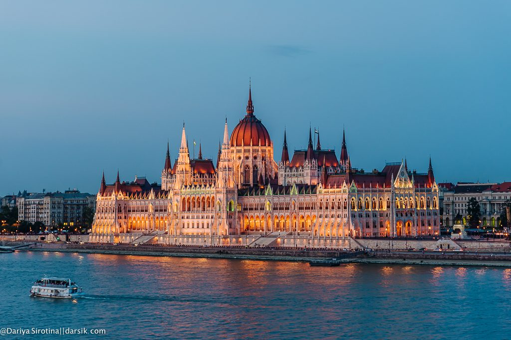
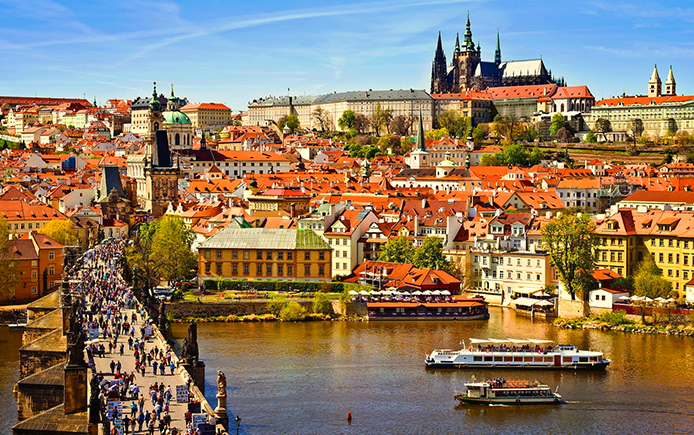

города

| Название города |
Страна | Изображение | Описание |
|---|---|---|---|
| Краткая инструкция к заполнению | |||
| Укажите наименования городов | Укажите страну города | Добавьте изображение города | Добавьте описание |
| Будапешт | Венгрия |  | Будапе́шт — столица Венгрии, образованная в 1873 году в результате слияния трёх городов на берегах Дуная: Пешта, Буды и Обуды. Крупнейший город страны и десятый по величине в Европейском союзе (около 1,75 млн жителей на 2019 год[2]), центр агломерации с населением около 2,97 млн человек (2017)[3]. |
| Прага | Чехия |  | Пра́га (чеш. Praha [ˈpraɦa]) — статутный город и столица Чешской Республики, административный центр Среднечешского края и двух его районов: Прага-Восток и Прага-Запад. Образует самостоятельную административно-территориальную единицу страны. |
| Париж | Франция | |
Пари́ж (фр. Paris [paˈʁi] Информация о файле слушать) — столица и крупнейший город Франции, а также административный центр региона Иль-де-Франс. Образует коммуну и департамент, разделённый на 20 округов. |